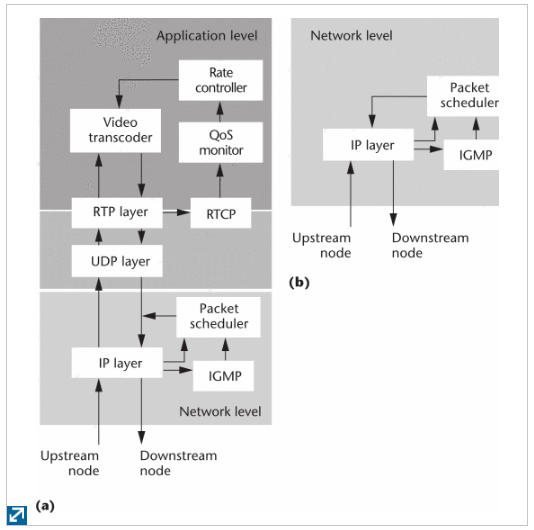

2017/03/30 - (Paper) Adaptive Video Multicast over the Internet - Part 2¶
Survey
Authors : Jiangchuan Liu and Bo Li , Hong Kong University of Science and Technology
Published in: IEEE MultiMedia ( Volume: 10, Issue: 1, Jan-Mar 2003 )
Full text : IEEE link here.
Existing adaptation approaches for video multicast (cont.)¶
Agent-based adaptation¶
Deploy several agents in a large-scale network, and the agents partition the network into several confined regions, and each agent can thus handle the requirements more easily from its local region.
{kind=link}
In figure (a) , an active node (such as a video gateway or agent) offers a richer set of services for video transmission at the application level than figure (b).
Support for video coding techniques¶
Discrete cosine transform (DCT [1]) : A finite sequence of data points in terms of a sum of cosine functions oscillating at different frequencies. => Related to lossy compression of audio (e.g. MP3) and images (e.g. JPEG)
Variable bit rate (VBR) and Constant bit rate(CBR) [2] : Both terms are used to describe QoS.
Transcoding¶
A transcoder converts an existing video stream into a new stream with a different format or rate.
Conclusions¶
- Simulcast remains a promising approach to address user heterogeneity.=> It’s supported in many commercial streaming systems.
- Layered multicast has seldom been used.
- The process of decompression and lossy recompression inherently accumulates quantization noise each time.
- Since Inhternet protocol multicast hasn’t been widely deployed, the CDN [4] provides a very attractive alternative that’s readily available for the current Internet.
Reference¶
| [1] | DCT https://en.wikipedia.org/wiki/Discrete_cosine_transform |
| [2] | VBR, CBR http://blog.xuite.net/kkaima2/twblog/117443956-CBR%E3%80%81+VBR%E3%80%81ABR+%E5%B7%AE%E7%95%B0%E6%80%A7 |
| [3] | Video compression https://zh.wikipedia.org/wiki/%E8%A6%96%E8%A8%8A%E5%A3%93%E7%B8%AE%E5%9C%96%E5%83%8F%E9%A1%9E%E5%9E%8B |
| [4] | CDN http://blog.lyhdev.com/2012/02/cdn.html |